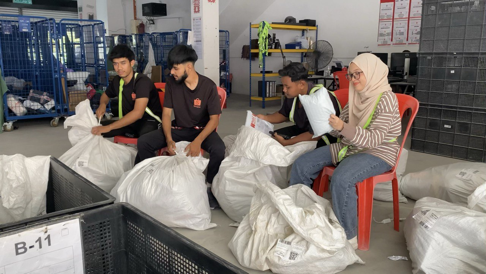

Home About Me Work Experience Gallery
Playschool Teacher

Right after I finished SPM, I worked as a playschool teacher at Brainy Bunch International Islamic Montessori Ukay Perdana. It has always been my passion
to pursue my studies in Early Childhood Education field, hence why I chose to worked as a playschool teacher after high school finished. It was a rewarding
experience that allowed me to make a difference in the lives of young children. Working with them helped me develop patience, creativity, and strong
communication skills. I learned to adapt quickly, plan engaging lessons, and create a nurturing environment for the children to thrive in. This role
deepened my love for helping others grow and learn.
Promoter
In addition to my teaching experience, I also worked as a promoter, where I had the opportunity to sell products like popcorn and essential oils.
This role taught me valuable skills in sales, customer service, and marketing. I learned how to connect with customers, understand their needs,
and communicate the benefits of the products I was promoting. Whether sharing the joy of freshly made popcorn or explaining the therapeutic qualities
of essential oils, I enjoyed engaging with people and helping them discover products that enhanced their daily lives. This experience sharpened my
communication skills and gave me a deeper understanding of what it takes to build trust and create lasting customer relationships.
Warehouse Sorter
Working as a Warehouse Shopee Sorter provided me with hands-on experience in logistics and operations. My responsibilities included sorting and organizing
orders, ensuring products were packed correctly, and making sure everything was ready for shipment. This role helped me develop a strong attention to detail,
time management skills, and the ability to work efficiently under pressure. I learned the importance of accuracy in order fulfillment and how to prioritize
tasks to meet tight deadlines. It was a fast-paced environment that taught me the value of teamwork and adaptability in a busy warehouse setting.